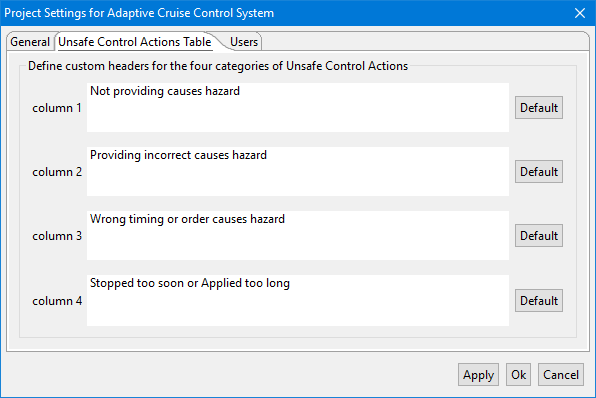

All settings edited in the Project Settings are set only for the chosen project which can be determined in the pop-up title.
The Unsafe Control Actions Table can be opened by navigating to Project->Project Settings->Unsafe Control Actions Table
In this dialog the definitions of the four categories of Unsafe Control Actions can be altered.